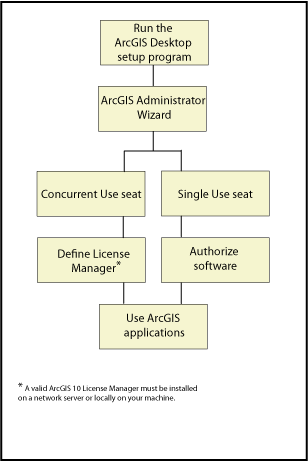

Installation overview
The installation procedure includes the following steps:

Run the ArcGIS Desktop setup program
Log into My Esrito access the available setups. Download the setup files and run setup.exe. For more information on installing ArcGIS Desktop, see Installing ArcGIS Desktop on your computer.
Complete the steps in the ArcGIS Administrator Wizard
After the installation is complete, the ArcGIS Administrator Wizard is launched. Select your product type. If you will be using a concurrent-use product, you will need to define your license manager. If you will be using a single-use product, you will need to authorize your software for use. If you are upgrading from a previous release, your authorization information will be retained for 10.8 use.
For more information on the License Manager, see The License Manager.
For more information on authorizing your software for use, see Authorizing your software.
Your ArcGIS software is now available for use.